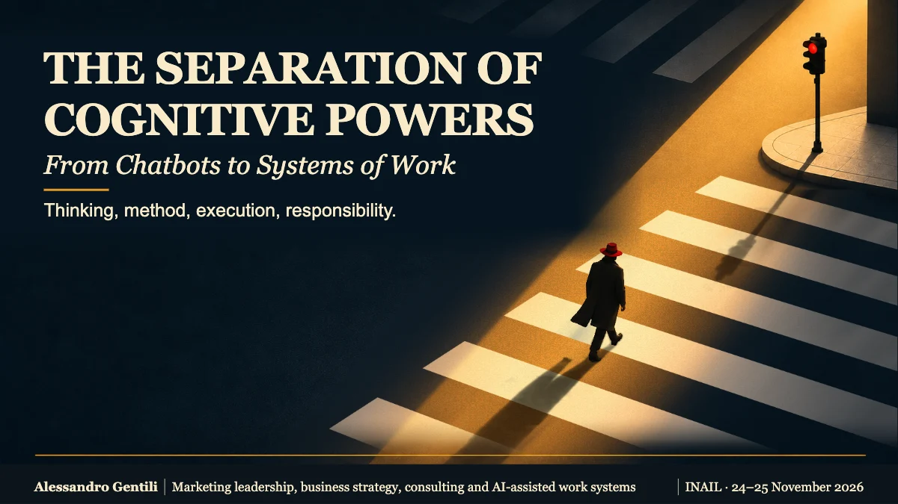

Layer 01
Knowledge & memory
Knowledge base
Sources, notes, editorial memory and project decisions organized so context survives individual sessions.
Purpose
Keep evidence, prior decisions and working context available before new production begins.
International · System
This is the operating layer: how knowledge is stored, how work moves, where checks happen and where human judgment remains mandatory.
Interactive conference presentation
From Chatbots to Systems of Work
Open the interactive presentation
Prepared for the INAIL conference, 24–25 November 2026.
In eight scenes, Alessandro Gentili applies the ideas developed in the philosophical essay in Method to AI-assisted work, with examples of editorial review, source verification and professional approval.
Operating architecture
Knowledge, production, quality and governance are connected layers rather than a catalogue of tools.
Layer 01
Sources, notes, editorial memory and project decisions organized so context survives individual sessions.
Keep evidence, prior decisions and working context available before new production begins.
Layer 02
Branch, patch, test, review, deploy and live QA make public changes move through a visible sequence.
Research, comparison, drafting and verification modules operate inside explicit boundaries and review points.
Layer 03
Checks for tone, structure, clarity, density, coherence and the difference between draft quality and approval.
Metadata, internal links, canonical logic, sitemap discipline, entity clarity and AI-readable architecture without keyword stuffing.
Layer 04
Evidence, uncertainty, responsibility and final approval remain visible where consequences matter.
Experimental modules remain labelled as internal, in validation or prototype until evidence justifies a stronger claim.
Rule
The center is judgment: deciding what evidence matters, what uncertainty remains, what should be published and what still needs a human decision.
A useful system does not hide uncertainty behind automation. It makes state, evidence and responsibility legible.